Mathematical model¶
SESAME (Sequential Semi-Analytic Montecarlo Estimation) employs a Bayesian perspective on the problem of estimating an unknown number of current dipoles from a set of spatial topographies of MagnetoEncephaloGraphic (MEG) and/or ElectroEncephaloGraphic (EEG) data. This section intends to outline the main ideas behind it. For a thorough description of the subject, the reader is referred to [1], [2].
For the sake of clarity, the description below deals with the analysis of a single MEG/EEG topography. However, as shown in [1], this approach easily generalizes to include multiple topographies under the hypothesis that both the number of sources and their locations do not change.
Multi–dipole source model.¶
SESAME makes use of the equivalent current dipole model for the neuronal currents. In this framework, the brain volume is discretized into small domains and the activity of the neuronal population inside any of these domains is represented by a point source, which can be thought of as the concentration of the current to a given reference point of the domain.
In mathematical terms, each of these point sources, termed current dipoles, is an applied vector, whose
moment 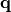 expresses the strength and the orientation of the current.
The neuronal primary current distribution  is then assumed to be closely approximated by
the superposition of a small — but unknown — number 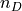
of current dipoles, and can therefore be seen in abstract terms as a point in the disjoint union of
spaces
is then assumed to be closely approximated by
the superposition of a small — but unknown — number 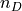
of current dipoles, and can therefore be seen in abstract terms as a point in the disjoint union of
spaces
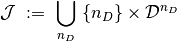
in which 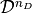 is the state space of the –tuple of current dipoles
approximating , and where the number of dipoles is explicitly included
among the unkowns. The space is defined as the Cartesian product of
copies of the single dipole space 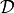 whose points
are given by the pairs 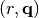, in which  is an integer variable
representing the dipole location and is a three–dimensional vector representing
the dipole moment.
Any current distribution is therefore represented as
is an integer variable
representing the dipole location and is a three–dimensional vector representing
the dipole moment.
Any current distribution is therefore represented as
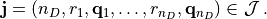
or also equivalently as
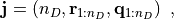
which directly follows from the previous equation by reordering the axes and by introducing the shorthand notations
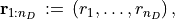

Measurement model¶
Let 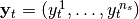 denote the data recorded by
the 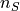 MEG/EEG sensors at time  .
Assuming data to be affected by zero–mean Gaussian additive noise, at each sampled time
the following functional relation holds
.
Assuming data to be affected by zero–mean Gaussian additive noise, at each sampled time
the following functional relation holds
(1)¶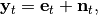
being 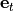 the exact field produced by the neural current distribution 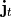 and 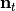 the noise term. The explicit model for is given by
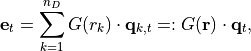
where, at time  , 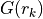 is the lead field matrix computed at the location 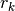 of the
, 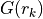 is the lead field matrix computed at the location 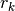 of the
 –th dipole on the discretized cortex, 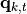 is the corresponding dipole moment, and
–th dipole on the discretized cortex, 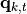 is the corresponding dipole moment, and
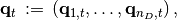
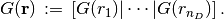
In the forward model both free- (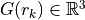) and fixed- (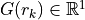, normal to the cortical surface) dipole orientations are allowed.
Statistical model.¶
In a Bayesian approach to the neuromagnetic inverse problem, the MEG/EEG data  ,
the unknown and the noise 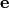 are considered as the realizations of
corresponding random variables 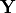,
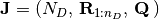 and
,
the unknown and the noise 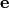 are considered as the realizations of
corresponding random variables 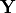,
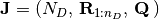 and  ,
related by
,
related by
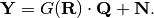
In this framework, the solution is the posterior probability density function (pdf) of 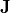 conditioned on the data, which, in the light of Bayes’ theorem, can be written as
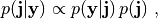
being  the prior pdf, and 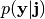 the likelihood function.
From 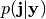 sensible estimates of can then be computed.
the prior pdf, and 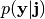 the likelihood function.
From 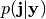 sensible estimates of can then be computed.
Prior distribution.¶
The prior pdf encodes all the information on the unknown which is available before the
measurement is made. Here we set:
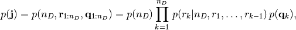
where:
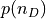 is the prior pdf for the number of dipole, which is defined as a Poisson distribution with mean
 .
.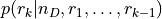 is the prior pdf for the location of the 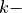 th dipole, which is defined as a uniform distribution on the given brain discretization, under the constraint that at each grid point can be located at most one dipole.
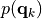 is the prior pdf for the dipole moment. Its definition depends on the value given to the boolean parameter
hyper_qwhen instantiating the classSesame. In particular:if
hyper_q = True, it is given by a hierarchical model 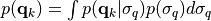, where the conditional distribution 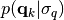 is a trivariate Gaussian distribution with zero mean and diagonal matrix equal to 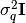 and the prior distribution of the standard deviation 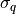 is log-uniform;if
hyper_q = False, it is a trivariate Gaussian distribution with zero mean and diagonal matrix equal to . The variance 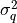 reflects information on the dipole strenght.
Likelihood function.¶
The likelihood function, , contains information on the forward model (1) and the statistical properties of the noise. Here we assume the noise to be Gaussian with zero mean and diagonal covariance matrix 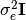, thus
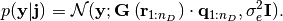
SESAME in action.¶
In order to compute estimates of the unknown neural currents from the posterior distribution, a numerical approximation of the latter is needed. By exploiting the semi–linear structure of the MEG/EEG forward model SESAME approximates the posterior pdf
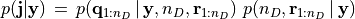
through a two–step approach:
first the marginal posterior 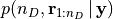 is approximated via an Adaptive Sequential Monte Carlo (ASMC) sampler [2] ;
then is analytically computed.
ASMC sampler.¶
The ASMC sampler aims at approximating the target pdf using a large set of samples, termed particles; in our context each particle is a candidate solution and contains all the parameters that are estimated through the Monte Carlo procedure, namely the number of active sources and their location.
One easy way to produce such set of samples is to draw them independently from a simple pdf, and possibly weight them to correctly approximate the target pdf (Importance Sampling, IS [3]).
An alternative approach is to start from a random candidate, perturb it randomly many times, and then approximate the target pdf with the collection of samples along the iterations (Markov Chain Monte Carlo, MCMC [3]).
The ASMC sampler combines these two techniques: a sequence of artificial distributions is defined that smoothly
moves from a tractable prior pdf  to the posterior pdf
, multiple samples are independently drawn from the prior pdf,
evolve following an MCMC scheme, and their weights are updated after every MCMC step;
at times, a resample move is performed, that means samples having negligible weights are replaced by samples in
the higher–probability region, so as to explore better these areas.
Eventually, the target distribution is approximated by the weighted sample set obtained at the last iteration.
to the posterior pdf
, multiple samples are independently drawn from the prior pdf,
evolve following an MCMC scheme, and their weights are updated after every MCMC step;
at times, a resample move is performed, that means samples having negligible weights are replaced by samples in
the higher–probability region, so as to explore better these areas.
Eventually, the target distribution is approximated by the weighted sample set obtained at the last iteration.
The step with which the path from the prior to the posterior pdf is covered is not established a priori, but adaptively determined at run-time. This means that the actual number of iterations is also determined online, even if it is always kept within given lower and upper bounds.
Analytic computation of .¶
By exploiting the mutual independence of and and the Gaussian assumptions made about the prior pdf of the dipole moments and the noise model, SESAME analytically compute the posterior pdf . Indeed, it is a Gaussian density whose mean and variance depend only on the data, the forward solution 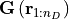, and the standard deviations and 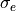.
Get the most out of SESAME’s results.¶
As descibed above, SESAME approximates the full posterior distribution as the set of weighted particles
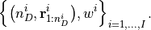
Roughly speaking, each of the  particles represents a candidate source configuration,
while the corresponding weight 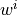 quantifies its probability.
particles represents a candidate source configuration,
while the corresponding weight 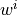 quantifies its probability.
SESAME also provides an estimate of the unknown neuronal primary current distribution ,
through the following procedure:
first the most probable model is identified by estimating mode of the posterior pdf for the number of sources i.e.
subsequently, for each point
in the cortical discretization, the posterior probability of a source
being located in is computed as:the above quantity is then used to produce posterior maps of activation on the cortical surface and to compute estimates of dipole locations as the local peaks of such a probability map;
finally, dipole moments can be reasonably estimated as the mean of the corresponding Gaussian distribution.
Note
The number of components of the estimated dipole moments depends on the dipole orientation constraint in the forward model.